Teacher Committee
Anne Carroll, Ciara Grufferty, Daithi Flynn, Denise Nolan, Eileen Murray, Emily Doyle, Joanne Kearns, Katherine Howlin, Louise Kenny, Mairead Roberts, Maria Barry, Paige Poole, Sandy Morley, Siobhan Murphy, Steph O’ Dwyer, Simone O Neill
Student Committee
Shauna Nolan V3, Emma Gethings P3, Chloe Moulds B6, Catherine O’Mahony C6, Bronwyn Castles B5, Emma Warren C3, Ciara O’Sullivan C3, Chelsea Sunderland C3, Oisin Sloan-Starr C3, Niall Fogarty C2, Ciaran Malone B5, Matthew Crawte B5, Caitlin Clauson V5, Liam Bowkett A1, Ryan Mc Loughlin C1, Ben Holmes B1, Peter Ennis B1, Katie Bynne B1, Hugh Mc Enery A6, Aron Rooney C6, Sam Homes A1, Conor Donohoe A1, Faith Holmes M1, Catriona O’Neill B1, Amy Conroy P4, Maura O’rourke P4, Anna Dillon B4, Saoirse Power A4, Alva Power C4, auline Skiersinis B2, Robert Heely C2, Isabel Ryan B2
Cycle Against Suicide
Cycle Against Suicide was founded by Irish entrepreneur, Jim Breen as a result of an appearance on RTÉ’S documentary, The Secret Millionaire. The programme inspired Jim to continue to use his skills and influences to help raise awareness of mental health in Ireland and signpost people in need, to the considerable supports available for suicide prevention in Ireland.
- Raise awareness of this prevalent issue of Suicide
- Offer reassurance that ‘it’s ok not to feel ok; and it’s absolutely ok to ask for help’
- Direct people to where this critical help is available both locally and across the island of Ireland.
Suicide is claiming the lives of at least 800 people each year on the island of Ireland. This includes fathers and mothers, wives and husbands, sons and daughters, sisters and brothers, best friends and colleagues.
The Ambassador School Programme was established in 2013 and aims to encourage schools to become actively involved in mental health promotion. The programme plan. The programme also aims to recognise innovative and effective initiatives. They facilitate schools to share and showcase good practice.
he Ambassador School Programme is school led and involves the completion of what are known as ‘Five Gears’ over the course of the year.
The Ambassador School Programme is school led and involves the completion of what are known as ‘Five Gears’ over the course of the year.
- 1ST Gear: Mental Health Education
- 2nd Gear: Project Work
- 3rd Gear: Simple Things
- 4th Gear: Mental Health Week
- 5th Gear: Get Active
F.C.J. is striving to become an Ambassador School for Cycle Against Suicide and is currently undertaking the ‘5 Gears’. There are three committees, a teacher, senior student and junior student, working together to guide the whole school to ensure the 5 Gears are completed.


 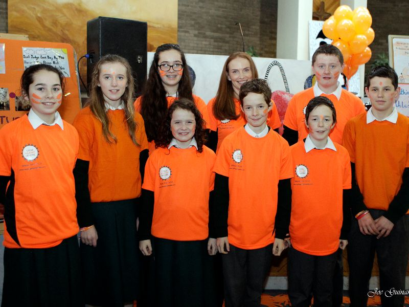
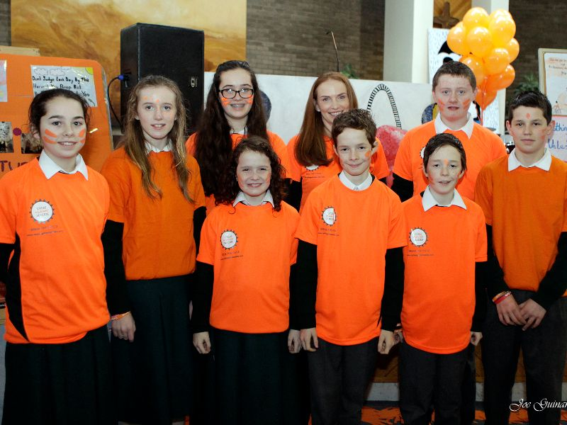

 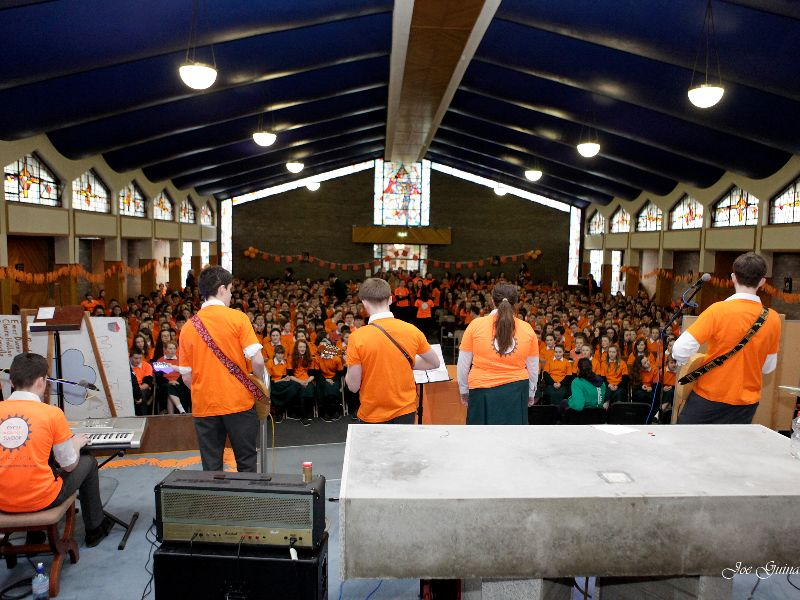
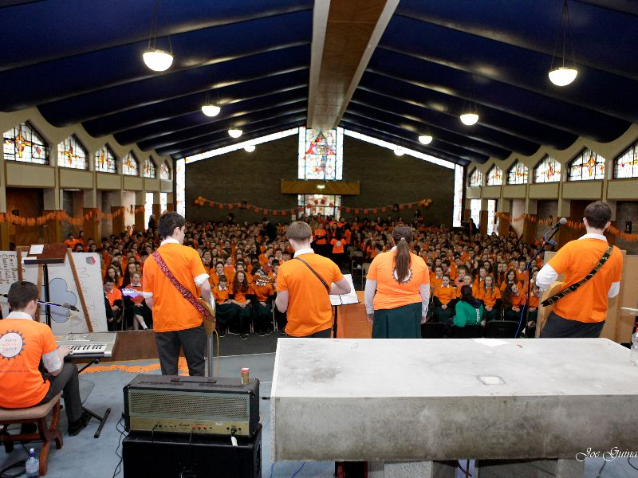

 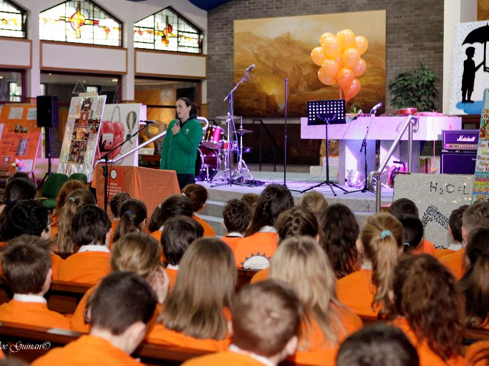
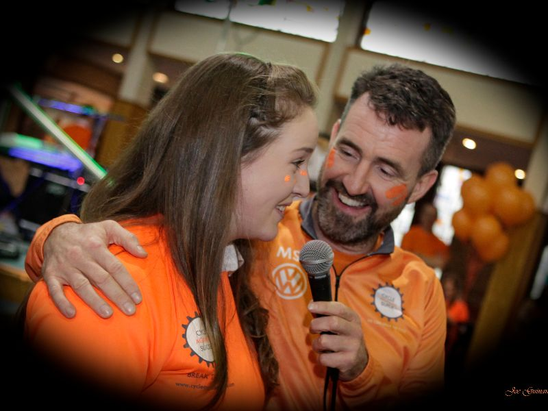
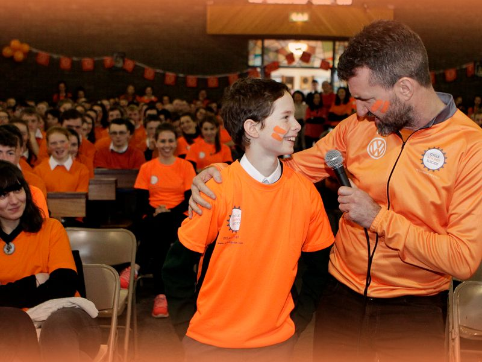
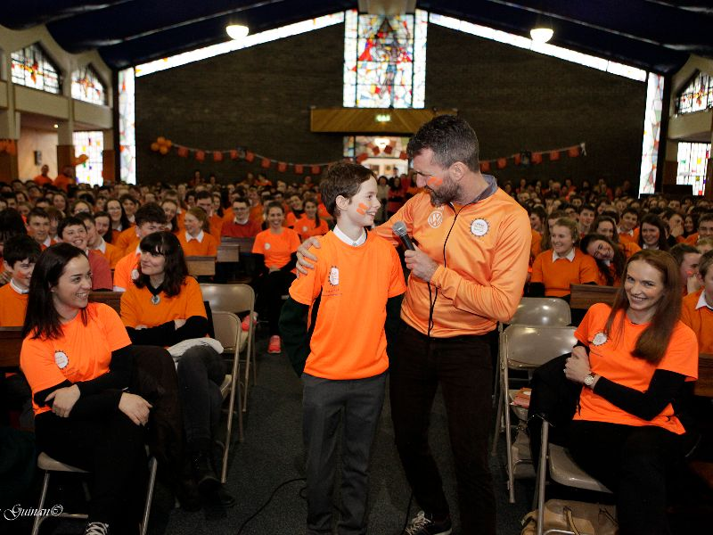
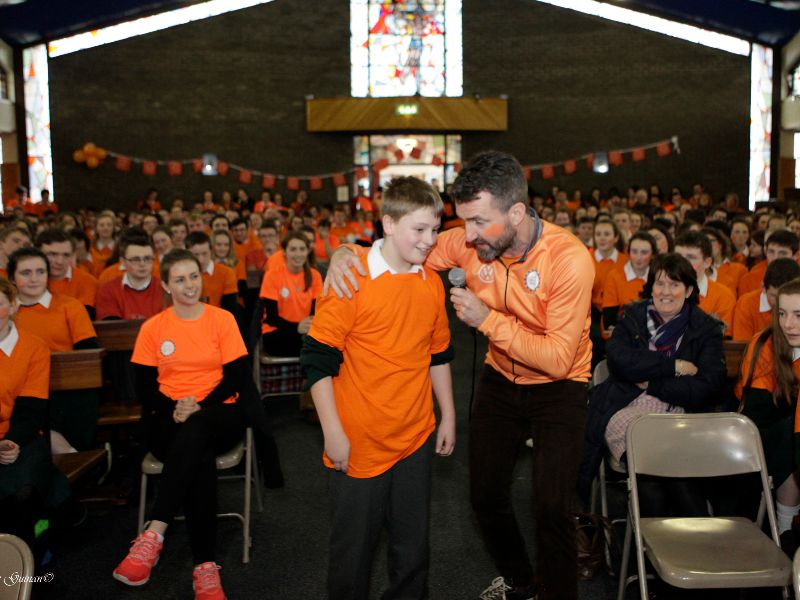
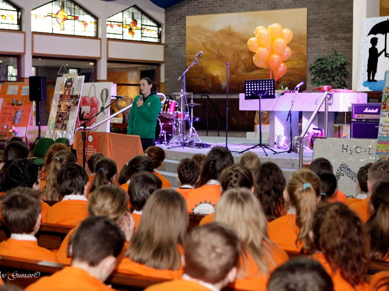
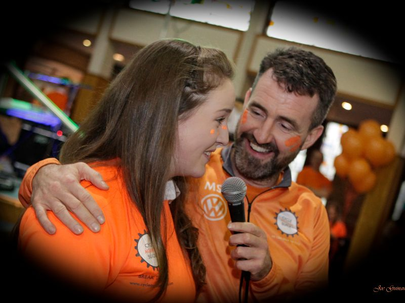
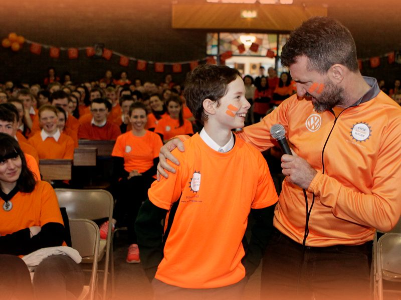
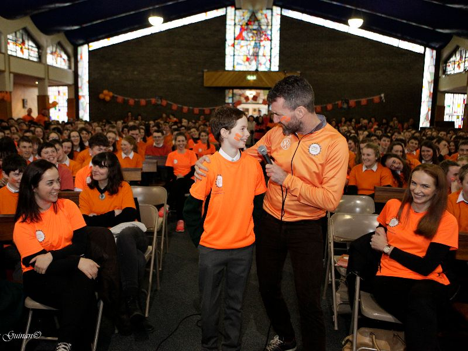
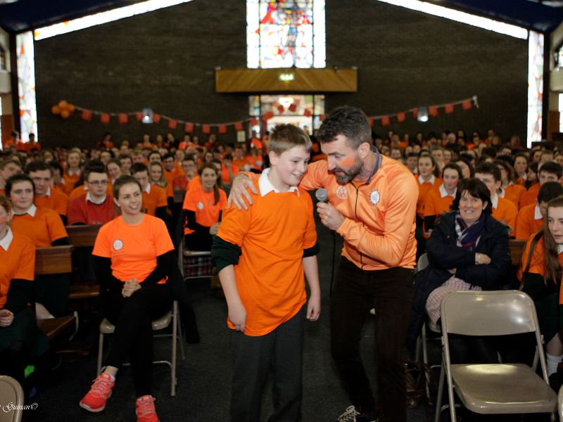